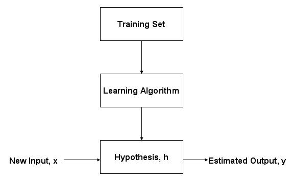
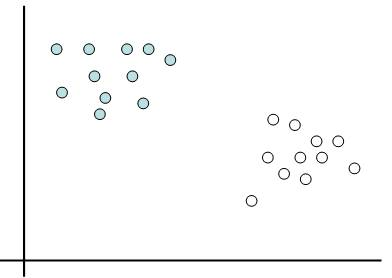
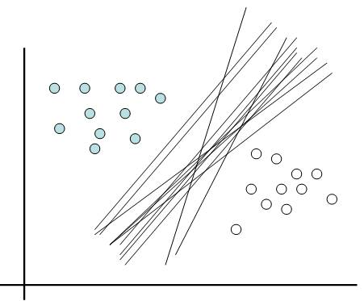
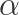
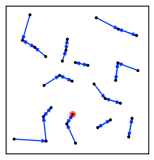
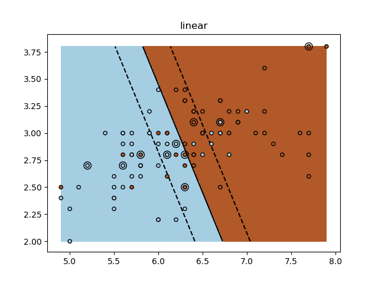
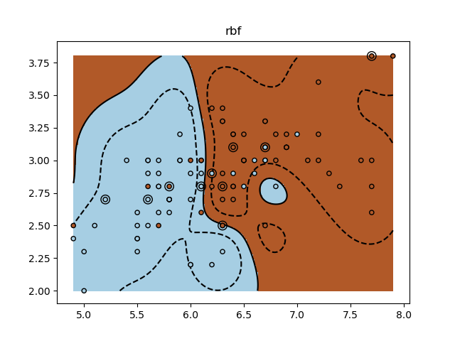
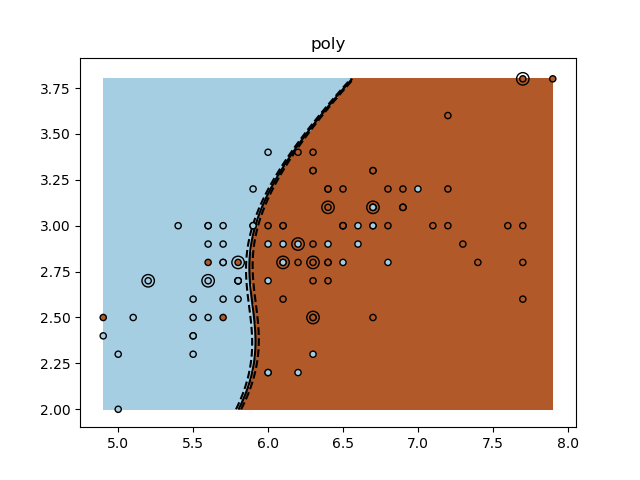
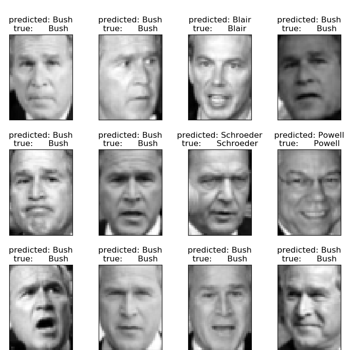

Machine Learning
Using Python
Created by Ganesh Bhosale in Dwij IT Solutions

Your support
Like this Machine Learning tutorial, our tutorials are always open for learners. Like our facebook page to get more free tutorial updates.
Machine learning
Machine learning is a field of computer science that gives computers the ability to learn without being explicitly programmed.
Arthur Samuel, an American pioneer in the field of computer gaming and artificial intelligence, coined the term "Machine Learning" in 1959 while at IBM.
Machine learning
It sits at the intersection of statistics and computer science, yet it can wear many different masks. You may also hear it labeled several other names or buzz words
Data Science, Big Data, Artificial Intelligence, Predictive Analytics, Computational Statistics, Data Mining
Machine learning examples
- Supervised Learning - Your email provider kindly places that sketchy email from the "Nigerian prince with $50,000 to deposit into an overseas bank account" into the spam folder.
- Unsupervised Learning - Marketing firms "kindly" use hundreds of behavior and demographic indicators to segment customers into targeted offer groups. (find hidden patterns or grouping in data without labeled responses)
- Reinforcement Learning - A computer and camera within a self-driving car interact with the road and other cars to learn how to navigate a city.
Why Machine learning ?
- Massive Global Demand - Data scientists, software engineers, and business analysts all benefit by knowing machine learning
- Data is Power - Data is transforming everything we do. All organizations, from startups to tech giants to Fortune 500 corporations, are racing to harness their data
- Easy Decision Making - Large organizations can take fast decision based on Analysis tools powered by ML.
Prerequisites
- Python for Data Science - You can’t use machine learning unless you know how to program.
- Statistics for Data Science - Understanding statistics, especially Bayesian probability, is essential for many machine learning algorithms.
- Math for Data Science - Original algorithm research requires a foundation in linear algebra and multivariable calculus.
Requirements
- Python 2.7
- NumPy - for more efficient numerical computation
- Scikit-Learn / sklearn - Tool for data mining
NumPy
- Mathematical and logical operations on arrays.
- Fourier transforms and routines for shape manipulation
- Operations related to linear algebra. NumPy has in-built functions for linear algebra and random number generation.
numpy.org
NumPy Installation
pip install numpyNumPy Ndarray Object
- N-dimensional array type
- Every item with same size of memory
- Any item extracted from ndarray object (by slicing) is represented by a Python object of one of array scalar types.

NumPy Ndarray Object
numpy.array(object, dtype = None, copy = True,
order = None, subok = False, ndmin = 0)
>>> import numpy as np
>>> a = np.array([[1, 2], [3, 4]])
>>> print a
[[1 2]
[3 4]]
>>> a = np.array([1, 2, 3], dtype = complex)
>>> print a
[ 1.+0.j 2.+0.j 3.+0.j]
NumPy Data Types
bool_, int_, intc, intp, int8, int16, int32, int64,
uint8, uint16, uint32, uint64,
float_, float16, float32, float64,
complex_, complex64, complex128
NumPy Array Attributes
>>> import numpy as np
>>> a = np.array([[1,2,3],[4,5,6]])
>>> print a.shape
(2, 3)
>>> a.shape = (3,2)
>>> print a
[[1 2]
[3 4]
[5 6]]
>>> b = a.reshape(3,2)
>>> print b
[[1 2]
[3 4]
[5 6]]
NumPy Array Attributes
>>> import numpy as np
>>> a = np.arange(24)
>>> print a
[ 0 1 2 3 4 5 6 7 8 9 10 11 12 13 14 15 16 17 18 19 20 21 22 23]
>>> a.ndim
1
>>> b = a.reshape(2,4,3)
>>> print b
[[[ 0 1 2]
[ 3 4 5]
[ 6 7 8]
[ 9 10 11]]
[[12 13 14]
[15 16 17]
[18 19 20]
[21 22 23]]]
>>> a.itemsize
8
NumPy Array Creation Routines
>>> # numpy.empty(shape, dtype = float, order = 'C')
>>> import numpy as np
>>> x = np.empty([3, 2], dtype = int)
>>> print x
[[-6917529027641081856 -6917529027641081856]
[ 140512543637508 140512543686784]
[ 140512543688528 140512543686784]]
>>>
>>> x = np.zeros(5)
>>> print x
[ 0. 0. 0. 0. 0.]
>>> # numpy.zeros(shape, dtype = float, order = 'C')
>>> x = np.zeros((2, 2), dtype = np.int)
>>> print x
[[0 0]
[0 0]]
>>> # numpy.ones(shape, dtype = None, order = 'C')
>>> x = np.ones([2, 2], dtype = int)
>>> print x
[[1 1]
[1 1]]
>>>
NumPy - Array From Existing Data
>>> # numpy.asarray(a, dtype = None, order = None)
>>> import numpy as np
>>> x = [1,2,3]
>>> a = np.asarray(x)
>>> print a
[1 2 3]
>>>
>>> x = [(1,2,3),(4,5)]
>>> a = np.asarray(x)
>>> print a
[(1, 2, 3) (4, 5)]
NumPy - Array From Numerical Ranges
>>> # numpy.arange(start, stop, step, dtype)
>>> import numpy as np
>>> x = [1,2,3]
>>> a = np.asarray(x)
>>> print a
[1 2 3]
>>>
>>> x = [(1,2,3),(4,5)]
>>> a = np.asarray(x)
>>> print a
[(1, 2, 3) (4, 5)]
NumPy - Advanced Indexing
>>> import numpy as np
>>> x = np.array([[1, 2], [3, 4], [5, 6]])
>>> y = x[[0,1,2], [0,1,0]]
>>> print y
[1 4 5]
>>>
>>> x = np.array([[ 0, 1, 2],[ 3, 4, 5],[ 6, 7, 8],[ 9, 10, 11]])
>>> print x
[[ 0 1 2]
[ 3 4 5]
[ 6 7 8]
[ 9 10 11]]
>>> rows = np.array([[0,0],[3,3]])
>>> cols = np.array([[0,2],[0,2]])
>>> y = x[rows,cols]
>>> print y
[[ 0 2]
[ 9 11]]
NumPy - Broadcasting
>>> import numpy as np
>>> a = np.array([[0.0,0.0,0.0],[10.0,10.0,10.0],[20.0,20.0,20.0],[30.0,30.0,30.0]])
>>> b = np.array([1.0,2.0,3.0])
>>> print a
[[ 0. 0. 0.]
[ 10. 10. 10.]
[ 20. 20. 20.]
[ 30. 30. 30.]]
>>> print b
[ 1. 2. 3.]
>>> print a + b
[[ 1. 2. 3.]
[ 11. 12. 13.]
[ 21. 22. 23.]
[ 31. 32. 33.]]
NumPy - Broadcasting

NumPy - Iterating Over Array
>>> import numpy as np
>>> a = np.arange(0,60,5)
>>> a = a.reshape(3,4)
>>> print a
[[ 0 5 10 15]
[20 25 30 35]
[40 45 50 55]]
>>> for x in np.nditer(a):
... print x,
...
0 5 10 15 20 25 30 35 40 45 50 55
>>>
NumPy - Iterating Over Array
>>> import numpy as np
>>> a = np.arange(0,60,5)
>>> a = a.reshape(3,4)
>>> print a
[[ 0 5 10 15]
[20 25 30 35]
[40 45 50 55]]
>>> b = a.T # Transpose of array
>>> print b
[[ 0 20 40]
[ 5 25 45]
[10 30 50]
[15 35 55]]
>>> for x in np.nditer(b):
... print x,
...
0 5 10 15 20 25 30 35 40 45 50 55
>>>
NumPy - Modifying Array Values
>>> import numpy as np
>>> a = np.arange(0,60,5)
>>> a = a.reshape(3,4)
>>> print a
[[ 0 5 10 15]
[20 25 30 35]
[40 45 50 55]]
>>> for x in np.nditer(a, op_flags=['readwrite']):
... x[...]=2*x
...
>>> print a
[[ 0 10 20 30]
[ 40 50 60 70]
[ 80 90 100 110]]
>>>
More NUMPY
- Array Manipulation
- Binary Operators
- Mathematical Functions
- Arithmetic Operations
- Statistical Functions
- Matplotlib
Scikit Learn
- Simple and efficient tools for data mining and data analysis
- Accessible to everybody, and reusable in various contexts
- Built on NumPy, SciPy, and matplotlib
- Open source, commercially usable - BSD license
http://scikit-learn.org
Scikit Installation
sudo apt-get install python-pip
sudo apt-get install python-scipy
sudo pip install -U scikit-learnSupport Vector Machines (SVM)
In Machine learning, support vector machines (SVMs) are supervised learning models with associated learning algorithms that analyze data used for classification and regression analysis.
SVM Advantages
- Effective in high dimensional spaces
- Uses a subset of training points in the decision function (mory efficient support vectors)
- Versatile: different Kernel functions can be specified for the decision function
- Common kernels are provided, but it is also possible to specify custom kernels
SVM Disadvantages
- If the number of features is much greater than the number of samples, avoid over-fitting in choosing Kernel functions and regularization term is crucial.
- SVMs do not directly provide probability estimates, these are calculated using an expensive five-fold cross-validation.
SVM
- Supports both dense (numpy.ndarray) & sparse (scipy.sparse) Data
- SVMs do not directly provide probability estimates, these are calculated using an expensive five-fold cross-validation.
What is Supervised Learning ?
What is SVM ?
Visit a Node nearest to you only once. Also called greedy algorithm.
 What is SVM ?
- we see that the thinner lines mark the distance from the classifier to the closest data points called the support vectors.
- distance between the two thin lines is called the margin
What is SVM ?
- mechanical analogy emphasizes: Most important data points are the support vectors as they have the maximum values of Alpha . These points exert the maximum force on the decision sheet.
- these specific data points are “supporting” the hyperplane into equilibrium.
SVM Example
>>> from sklearn import svm
>>> X = [[0, 0], [1, 1]]
>>> y = [0, 1]
>>> clf = svm.SVC()
>>> clf.fit(X, y)
SVC(C=1.0, cache_size=200, class_weight=None, coef0=0.0,
decision_function_shape='ovr', degree=3, gamma='auto', kernel='rbf',
max_iter=-1, probability=False, random_state=None, shrinking=True,
tol=0.001, verbose=False)
>>>
>>> clf.predict([[2., 2.]])
array([1])
>>> # get support vectors
>>> clf.support_vectors_
array([[ 0., 0.],
[ 1., 1.]])
>>> # get indices of support vectors
>>> clf.support_
array([0, 1]...)
>>> # get number of support vectors for each class
>>> clf.n_support_
array([1, 1]...)
Classification

Classification
Def: Identifying to which category an object belongs to.
Applications: Spam detection, Image recognition.
Algorithms: SVM, Nearest Neighbors, Random Forest...
Nearest Neighbors
Visit a Node nearest to you only once. Also called greedy algorithm.
Nearest Neighbors

K Nearest Neighbors (kNN)
Visit a Node nearest to you only once. Also called greedy algorithm.

Nearest Neighbors
k Nearest Neighbors Classification
Classification is computed from a simple majority vote of the nearest neighbors of each point: a query point is assigned the data class which has the most representatives within the nearest neighbors of the point.
import numpy as np
import matplotlib.pyplot as plt
from matplotlib.colors import ListedColormap
from sklearn import neighbors, datasets
n_neighbors = 15
# import some data to play with
iris = datasets.load_iris()
# we only take the first two features. We could avoid this ugly
# slicing by using a two-dim dataset
X = iris.data[:, :2] # all rows x 2 columns
y = iris.target
h = .02 # step size in the mesh
# Create color maps
cmap_light = ListedColormap(['#FFAAAA', '#AAFFAA', '#AAAAFF'])
cmap_bold = ListedColormap(['#FF0000', '#00FF00', '#0000FF'])
for weights in ['uniform', 'distance']:
# we create an instance of Neighbours Classifier and fit the data.
clf = neighbors.KNeighborsClassifier(n_neighbors, weights=weights)
clf.fit(X, y)
# Plot the decision boundary. For that, we will assign a color to each
# point in the mesh [x_min, x_max]x[y_min, y_max].
x_min, x_max = X[:, 0].min() - 1, X[:, 0].max() + 1
y_min, y_max = X[:, 1].min() - 1, X[:, 1].max() + 1
xx, yy = np.meshgrid(np.arange(x_min, x_max, h),
np.arange(y_min, y_max, h))
Z = clf.predict(np.c_[xx.ravel(), yy.ravel()])
# Put the result into a color plot
Z = Z.reshape(xx.shape)
plt.figure()
plt.pcolormesh(xx, yy, Z, cmap=cmap_light)
# Plot also the training points
plt.scatter(X[:, 0], X[:, 1], c=y, cmap=cmap_bold,
edgecolor='k', s=20)
plt.xlim(xx.min(), xx.max())
plt.ylim(yy.min(), yy.max())
plt.title("3-Class classification (k = %i, weights = '%s')"
% (n_neighbors, weights))
plt.show()
KNeighborsClassifier
sklearn.neighbors.KNeighborsClassifier(
n_neighbors = 5,
weights = ’uniform’,
algorithm = ’auto’,
leaf_size = 30,
p = 2,
metric = ’minkowski’,
metric_params = None,
n_jobs = 1,
**kwargs )
SVM kernels
linear, rbf, poly
  
import numpy as np
import matplotlib.pyplot as plt
from sklearn import datasets, svm
iris = datasets.load_iris()
X = iris.data
y = iris.target
X = X[y != 0, :2]
y = y[y != 0]
n_sample = len(X)
np.random.seed(0)
order = np.random.permutation(n_sample)
X = X[order]
y = y[order].astype(np.float)
X_train = X[:int(.9 * n_sample)]
y_train = y[:int(.9 * n_sample)]
X_test = X[int(.9 * n_sample):]
y_test = y[int(.9 * n_sample):]
# fit the model
for fig_num, kernel in enumerate(('linear', 'rbf', 'poly')):
clf = svm.SVC(kernel=kernel, gamma=10)
clf.fit(X_train, y_train)
plt.figure(fig_num)
plt.clf()
plt.scatter(X[:, 0], X[:, 1], c=y, zorder=10, cmap=plt.cm.Paired,
edgecolor='k', s=20)
# Circle out the test data
plt.scatter(X_test[:, 0], X_test[:, 1], s=80, facecolors='none',
zorder=10, edgecolor='k')
plt.axis('tight')
x_min = X[:, 0].min()
x_max = X[:, 0].max()
y_min = X[:, 1].min()
y_max = X[:, 1].max()
XX, YY = np.mgrid[x_min:x_max:200j, y_min:y_max:200j]
Z = clf.decision_function(np.c_[XX.ravel(), YY.ravel()])
# Put the result into a color plot
Z = Z.reshape(XX.shape)
plt.pcolormesh(XX, YY, Z > 0, cmap=plt.cm.Paired)
plt.contour(XX, YY, Z, colors=['k', 'k', 'k'],
linestyles=['--', '-', '--'], levels=[-.5, 0, .5])
plt.title(kernel)
plt.show()
Classifier comparison

import numpy as np
import matplotlib.pyplot as plt
from matplotlib.colors import ListedColormap
from sklearn.model_selection import train_test_split
from sklearn.preprocessing import StandardScaler
from sklearn.datasets import make_moons, make_circles, make_classification
from sklearn.neural_network import MLPClassifier
from sklearn.neighbors import KNeighborsClassifier
from sklearn.svm import SVC
from sklearn.gaussian_process import GaussianProcessClassifier
from sklearn.gaussian_process.kernels import RBF
from sklearn.tree import DecisionTreeClassifier
from sklearn.ensemble import RandomForestClassifier, AdaBoostClassifier
from sklearn.naive_bayes import GaussianNB
from sklearn.discriminant_analysis import QuadraticDiscriminantAnalysis
h = .02 # step size in the mesh
names = ["Nearest Neighbors", "Linear SVM", "RBF SVM", "Gaussian Process",
"Decision Tree", "Random Forest", "Neural Net", "AdaBoost",
"Naive Bayes", "QDA"]
classifiers = [
KNeighborsClassifier(3),
SVC(kernel="linear", C=0.025),
SVC(gamma=2, C=1),
GaussianProcessClassifier(1.0 * RBF(1.0)),
DecisionTreeClassifier(max_depth=5),
RandomForestClassifier(max_depth=5, n_estimators=10, max_features=1),
MLPClassifier(alpha=1),
AdaBoostClassifier(),
GaussianNB(),
QuadraticDiscriminantAnalysis()]
X, y = make_classification(n_features=2, n_redundant=0, n_informative=2,
random_state=1, n_clusters_per_class=1)
rng = np.random.RandomState(2)
X += 2 * rng.uniform(size=X.shape)
linearly_separable = (X, y)
datasets = [make_moons(noise=0.3, random_state=0),
make_circles(noise=0.2, factor=0.5, random_state=1),
linearly_separable
]
figure = plt.figure(figsize=(27, 9))
i = 1
# iterate over datasets
for ds_cnt, ds in enumerate(datasets):
# preprocess dataset, split into training and test part
X, y = ds
X = StandardScaler().fit_transform(X)
X_train, X_test, y_train, y_test = \
train_test_split(X, y, test_size=.4, random_state=42)
x_min, x_max = X[:, 0].min() - .5, X[:, 0].max() + .5
y_min, y_max = X[:, 1].min() - .5, X[:, 1].max() + .5
xx, yy = np.meshgrid(np.arange(x_min, x_max, h),
np.arange(y_min, y_max, h))
# just plot the dataset first
cm = plt.cm.RdBu
cm_bright = ListedColormap(['#FF0000', '#0000FF'])
ax = plt.subplot(len(datasets), len(classifiers) + 1, i)
if ds_cnt == 0:
ax.set_title("Input data")
# Plot the training points
ax.scatter(X_train[:, 0], X_train[:, 1], c=y_train, cmap=cm_bright,
edgecolors='k')
# and testing points
ax.scatter(X_test[:, 0], X_test[:, 1], c=y_test, cmap=cm_bright, alpha=0.6,
edgecolors='k')
ax.set_xlim(xx.min(), xx.max())
ax.set_ylim(yy.min(), yy.max())
ax.set_xticks(())
ax.set_yticks(())
i += 1
# iterate over classifiers
for name, clf in zip(names, classifiers):
ax = plt.subplot(len(datasets), len(classifiers) + 1, i)
clf.fit(X_train, y_train)
score = clf.score(X_test, y_test)
# Plot the decision boundary. For that, we will assign a color to each
# point in the mesh [x_min, x_max]x[y_min, y_max].
if hasattr(clf, "decision_function"):
Z = clf.decision_function(np.c_[xx.ravel(), yy.ravel()])
else:
Z = clf.predict_proba(np.c_[xx.ravel(), yy.ravel()])[:, 1]
# Put the result into a color plot
Z = Z.reshape(xx.shape)
ax.contourf(xx, yy, Z, cmap=cm, alpha=.8)
# Plot also the training points
ax.scatter(X_train[:, 0], X_train[:, 1], c=y_train, cmap=cm_bright,
edgecolors='k')
# and testing points
ax.scatter(X_test[:, 0], X_test[:, 1], c=y_test, cmap=cm_bright,
edgecolors='k', alpha=0.6)
ax.set_xlim(xx.min(), xx.max())
ax.set_ylim(yy.min(), yy.max())
ax.set_xticks(())
ax.set_yticks(())
if ds_cnt == 0:
ax.set_title(name)
ax.text(xx.max() - .3, yy.min() + .3, ('%.2f' % score).lstrip('0'),
size=15, horizontalalignment='right')
i += 1
plt.tight_layout()
plt.show()
Recognizing hand-written Digits

# Standard scientific Python imports
import matplotlib.pyplot as plt
# Import datasets, classifiers and performance metrics
from sklearn import datasets, svm, metrics
# The digits dataset
digits = datasets.load_digits()
# The data that we are interested in is made of 8x8 images of digits, let's
# have a look at the first 4 images, stored in the `images` attribute of the
# dataset. If we were working from image files, we could load them using
# matplotlib.pyplot.imread. Note that each image must have the same size. For these
# images, we know which digit they represent: it is given in the 'target' of
# the dataset.
images_and_labels = list(zip(digits.images, digits.target))
for index, (image, label) in enumerate(images_and_labels[:4]):
plt.subplot(2, 4, index + 1)
plt.axis('off')
plt.imshow(image, cmap=plt.cm.gray_r, interpolation='nearest')
plt.title('Training: %i' % label)
# To apply a classifier on this data, we need to flatten the image, to
# turn the data in a (samples, feature) matrix:
n_samples = len(digits.images)
data = digits.images.reshape((n_samples, -1))
# Create a classifier: a support vector classifier
classifier = svm.SVC(gamma=0.001)
# We learn the digits on the first half of the digits
classifier.fit(data[:n_samples // 2], digits.target[:n_samples // 2])
# Now predict the value of the digit on the second half:
expected = digits.target[n_samples // 2:]
predicted = classifier.predict(data[n_samples // 2:])
print("Classification report for classifier %s:\n%s\n"
% (classifier, metrics.classification_report(expected, predicted)))
print("Confusion matrix:\n%s" % metrics.confusion_matrix(expected, predicted))
images_and_predictions = list(zip(digits.images[n_samples // 2:], predicted))
for index, (image, prediction) in enumerate(images_and_predictions[:4]):
plt.subplot(2, 4, index + 5)
plt.axis('off')
plt.imshow(image, cmap=plt.cm.gray_r, interpolation='nearest')
plt.title('Prediction: %i' % prediction)
plt.show()
Faces recognition using eigenfaces and SVMs

from __future__ import print_function
from time import time
import logging
import matplotlib.pyplot as plt
from sklearn.model_selection import train_test_split
from sklearn.model_selection import GridSearchCV
from sklearn.datasets import fetch_lfw_people
from sklearn.metrics import classification_report
from sklearn.metrics import confusion_matrix
from sklearn.decomposition import PCA
from sklearn.svm import SVC
# Display progress logs on stdout
logging.basicConfig(level=logging.INFO, format='%(asctime)s %(message)s')
# #############################################################################
# Download the data, if not already on disk and load it as numpy arrays
lfw_people = fetch_lfw_people(min_faces_per_person=70, resize=0.4)
# introspect the images arrays to find the shapes (for plotting)
n_samples, h, w = lfw_people.images.shape
# for machine learning we use the 2 data directly (as relative pixel
# positions info is ignored by this model)
X = lfw_people.data
n_features = X.shape[1]
# the label to predict is the id of the person
y = lfw_people.target
target_names = lfw_people.target_names
n_classes = target_names.shape[0]
print("Total dataset size:")
print("n_samples: %d" % n_samples)
print("n_features: %d" % n_features)
print("n_classes: %d" % n_classes)
# #############################################################################
# Split into a training set and a test set using a stratified k fold
# split into a training and testing set
X_train, X_test, y_train, y_test = train_test_split(
X, y, test_size=0.25, random_state=42)
# #############################################################################
# Compute a PCA (eigenfaces) on the face dataset (treated as unlabeled
# dataset): unsupervised feature extraction / dimensionality reduction
n_components = 150
print("Extracting the top %d eigenfaces from %d faces"
% (n_components, X_train.shape[0]))
t0 = time()
pca = PCA(n_components=n_components, svd_solver='randomized',
whiten=True).fit(X_train)
print("done in %0.3fs" % (time() - t0))
eigenfaces = pca.components_.reshape((n_components, h, w))
print("Projecting the input data on the eigenfaces orthonormal basis")
t0 = time()
X_train_pca = pca.transform(X_train)
X_test_pca = pca.transform(X_test)
print("done in %0.3fs" % (time() - t0))
# #############################################################################
# Train a SVM classification model
print("Fitting the classifier to the training set")
t0 = time()
param_grid = {'C': [1e3, 5e3, 1e4, 5e4, 1e5],
'gamma': [0.0001, 0.0005, 0.001, 0.005, 0.01, 0.1], }
clf = GridSearchCV(SVC(kernel='rbf', class_weight='balanced'), param_grid)
clf = clf.fit(X_train_pca, y_train)
print("done in %0.3fs" % (time() - t0))
print("Best estimator found by grid search:")
print(clf.best_estimator_)
# #############################################################################
# Quantitative evaluation of the model quality on the test set
print("Predicting people's names on the test set")
t0 = time()
y_pred = clf.predict(X_test_pca)
print("done in %0.3fs" % (time() - t0))
print(classification_report(y_test, y_pred, target_names=target_names))
print(confusion_matrix(y_test, y_pred, labels=range(n_classes)))
# #############################################################################
# Qualitative evaluation of the predictions using matplotlib
def plot_gallery(images, titles, h, w, n_row=3, n_col=4):
"""Helper function to plot a gallery of portraits"""
plt.figure(figsize=(1.8 * n_col, 2.4 * n_row))
plt.subplots_adjust(bottom=0, left=.01, right=.99, top=.90, hspace=.35)
for i in range(n_row * n_col):
plt.subplot(n_row, n_col, i + 1)
plt.imshow(images[i].reshape((h, w)), cmap=plt.cm.gray)
plt.title(titles[i], size=12)
plt.xticks(())
plt.yticks(())
# plot the result of the prediction on a portion of the test set
def title(y_pred, y_test, target_names, i):
pred_name = target_names[y_pred[i]].rsplit(' ', 1)[-1]
true_name = target_names[y_test[i]].rsplit(' ', 1)[-1]
return 'predicted: %s\ntrue: %s' % (pred_name, true_name)
prediction_titles = [title(y_pred, y_test, target_names, i)
for i in range(y_pred.shape[0])]
plot_gallery(X_test, prediction_titles, h, w)
# plot the gallery of the most significative eigenfaces
eigenface_titles = ["eigenface %d" % i for i in range(eigenfaces.shape[0])]
plot_gallery(eigenfaces, eigenface_titles, h, w)
plt.show()
References
Thank you
- Ganesh Bhosale
- Dwij IT Solutions
Did you liked this tutorial ?
Checkout more such tutorials on: http://dwij.net/tuts